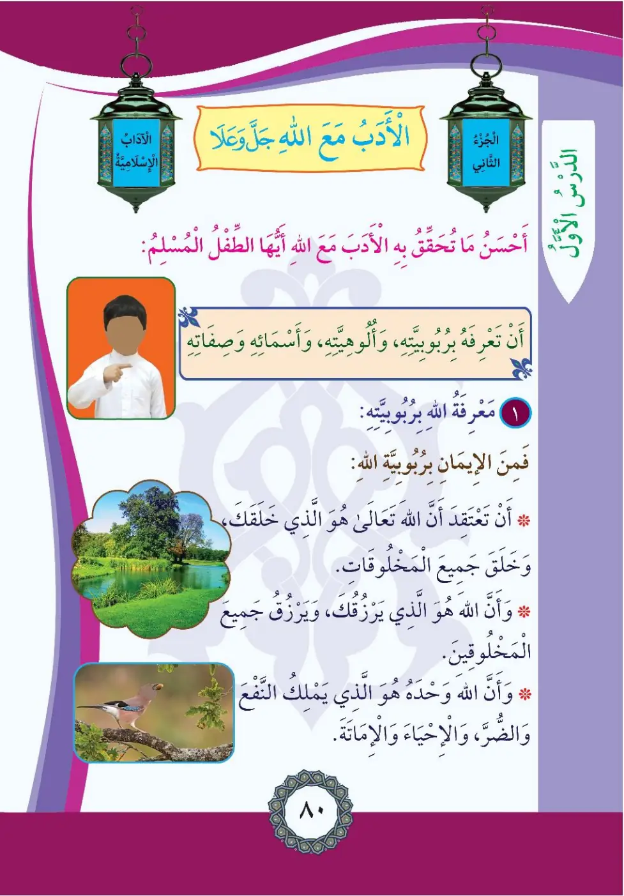
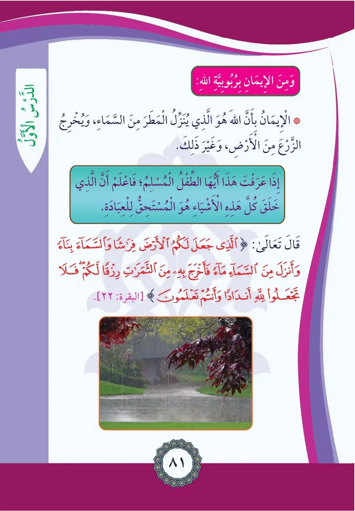
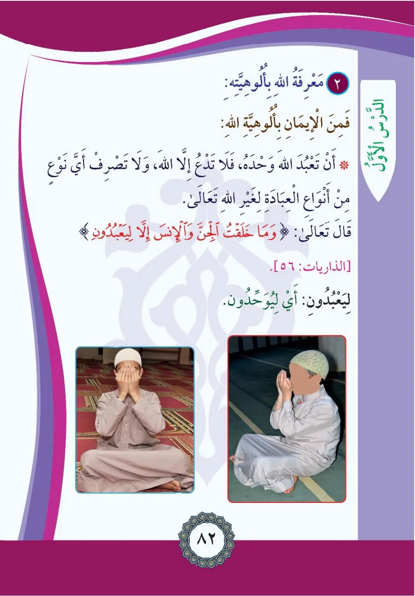
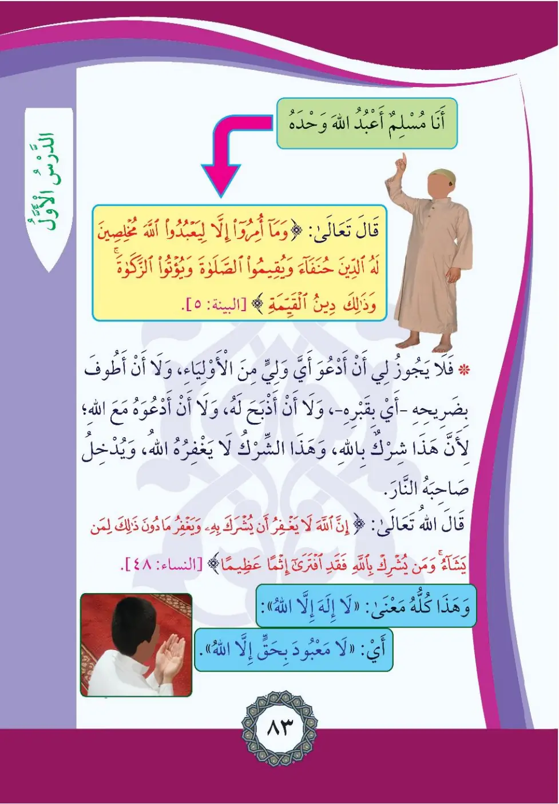
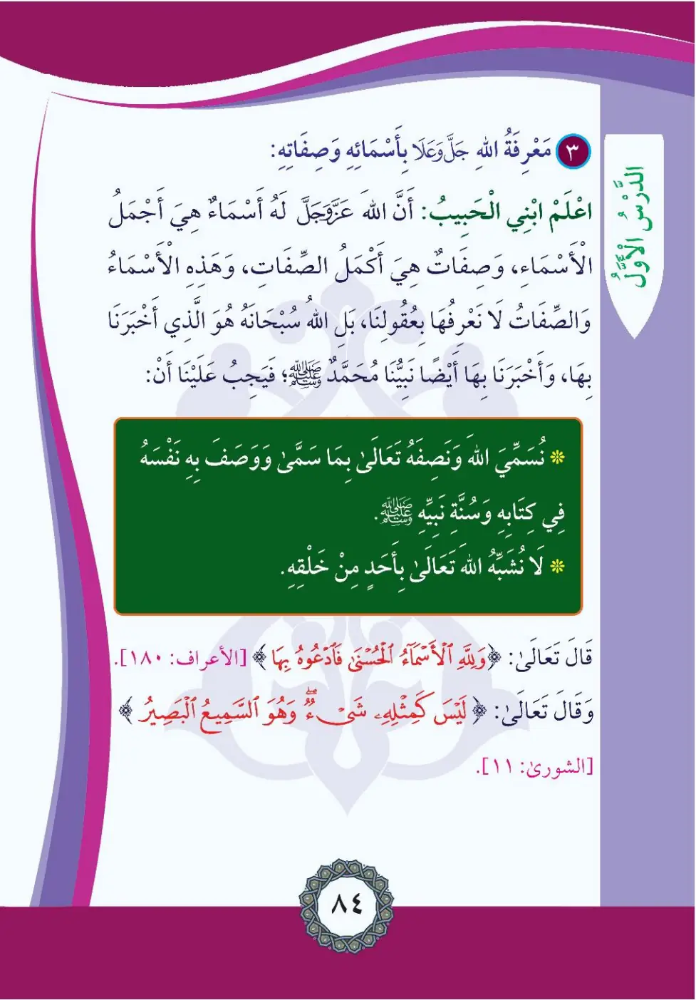

Stage 2·المرحلة الثانية⭐ Unit 1
الأَدَبُ مَعَ الله Good Manners with Allah
From the Textbookpp. 81–85





أَحْسَنُ مَا يَتَحَقَّقُ بِهِ الْأَدَبُ مَعَ اللَّهِ أَنْ تَعْرِفَ رُبُوبِيَّتَهُ، وَأُلُوهِيَّتَهُ، وَأَسْمَاءَهُ وَصِفَاتِهِ. مَعْرِفَةُ اللَّهِ بِالرُّبُوبِيَّةِ: أَنْ تُؤْمِنَ بِأَنَّ اللَّهَ تَعَالَى هُوَ الَّذِي خَلَقَكَ وَخَلَقَ جَمِيعَ الْمَخْلُوقَاتِ، وَأَنَّهُ الَّذِي يَرْزُقُكَ وَيَرْزُقُ جَمِيعَ الْمَخْلُوقِينَ، وَأَنَّهُ وَحْدَهُ الَّذِي يَمْلِكُ النَّفْعَ وَالضُّرَّ وَالْإِحْيَاءَ وَالْإِمَاتَةَ.
Ma'rifa tu Allahi bir-rububiyya: an tu'mina anna Allaha ta'ala huwa alladhi khalaqak.
The best way to have good manners with Allah is to know His lordship (rububiyyah), His divinity (uluhiyyah), His names and attributes.
Knowing Allah by His lordship means believing that Allah created you and all creatures, provides for you and all creation, and He alone controls benefit and harm, life and death.
அல்லாஹ்வுடன் நல்ல அதப் பெற: அவனுடைய இறைத்தன்மை, வணக்கத்திற்குரிய தன்மை, நாமங்கள், பண்புகளை அறிய வேண்டும்.
﴿الَّذِي جَعَلَ لَكُمُ الْأَرْضَ فِرَاشاً وَالسَّمَاءَ بِنَاءً وَأَنْزَلَ مِنَ السَّمَاءِ مَاءً فَأَخْرَجَ بِهِ مِنَ الثَّمَرَاتِ رِزْقاً لَكُمْ ۖ فَلَا تَجْعَلُوا لِلَّهِ أَنْدَاداً وَأَنْتُمْ تَعْلَمُونَ﴾
Alladhi ja'ala lakumu al-arda firashan wa-s-sama'a bina'an wa-anzala mina as-sama'i ma'an fa-akhraja bihi mina ath-thamarati rizqan lakum.
He who made the earth a bed for you, and the sky a structure, and sent down water from the sky and brought forth fruits as provision for you; so do not set up rivals to Allah while you know.
அவனே பூமியை உங்களுக்கு விரிப்பாகவும், வானத்தைக் கட்டிடமாகவும் ஆக்கி, மழையை இறக்கி கனிகளை உங்களுக்கு உணவாக்கினான்.
وَمِنَ الْإِيمَانِ بِرُبُوبِيَّةِ اللَّهِ: الْإِيمَانُ بِأَنَّهُ هُوَ الَّذِي يُنَزِّلُ الْمَطَرَ مِنَ السَّمَاءِ، وَأَنْبَتَ الزُّرُوعَ وَالْأَشْجَارَ مِنَ الْأَرْضِ. وَإِذَا عَرَفْتَ هَذَا فَاعْلَمْ أَيُّهَا الطِّفْلُ الْمُسْلِمُ أَنَّ هَذِهِ الْأَشْيَاءَ كُلَّهَا خَلَقَهَا اللَّهُ لِلْعِبَادَةِ، وَأَنَّ اللَّهَ هُوَ الْمُسْتَحِقُّ لِلْعِبَادَةِ.
Wa-mina al-imani bir-rububiyyati Allah: al-imanu bi-annahu nazzala al-matra min as-sama.
Believing in Allah's lordship also includes believing that He sends down rain and grows crops and trees from the earth. Once you know this, know - O Muslim child - that Allah created all these things for worship, and Allah alone deserves to be worshipped.
மழையை இறக்குபவனும் பயிர்களை முளைக்கச் செய்பவனும் அல்லாஹ்; எல்லாவற்றையும் அவனே வணக்கத்திற்காகப் படைத்தான்.
﴿وَمَا خَلَقْتُ الْجِنَّ وَالْإِنْسَ إِلَّا لِيَعْبُدُونِ﴾
Wa-ma khalaqtu al-jinna wa-l-insa illa li-ya'buduni.
I did not create jinn and mankind except to worship Me.
ஜின்களையும் மனிதர்களையும் என்னை வணங்குவதற்குத் தவிர வேறு நோக்கத்திற்கு படைக்கவில்லை.
مَعْرِفَةُ اللَّهِ بِالْأُلُوهِيَّةِ: أَنْ تَعْبُدَ اللَّهَ وَحْدَهُ فَلَا تَتَّخِذَ مِنْ دُونِ اللَّهِ وَلِيًّا، وَلَا تَصْرِفَ أَيَّ نَوْعٍ مِنْ أَنْوَاعِ الْعِبَادَةِ لِغَيْرِ اللَّهِ تَعَالَى. وَلَا يَجُوزُ لِي أَنْ أَدْعُوَ أَيَّ وَلِيٍّ مِنَ الْأَوْلِيَاءِ، وَلَا أَنْ أَذْبَحَ لَهُ وَلَا أَتَوَسَّلَ بِقَبْرِهِ؛ لِأَنَّ هَذَا شِرْكٌ بِاللَّهِ لَا يَغْفِرُهُ اللَّهُ، وَيُدْخِلُ صَاحِبَهُ النَّارَ.
Ma'rifa tu Allahi bil-ulahiyya: an ta'buda Allaha wahdahu fa-la tattakhidha min dunihi waliyyan.
Knowing Allah by His divinity means worshipping Allah alone, taking no protector besides Him, and directing no act of worship to other than Allah. It is not permissible for me to call upon any wali (saint), slaughter for him, or seek nearness through his grave; this is shirk with Allah which He does not forgive, and its doer will enter the Fire.
அல்லாஹ்வை மட்டுமே வணங்க வேண்டும்; ஒலியாக்களை அழைப்பதும் அவர்களுக்கு பலி கொடுப்பதும் ஷிர்க் - மன்னிக்கப்படாது.
﴿وَمَا أُمِرُوا إِلَّا لِيَعْبُدُوا اللَّهَ مُخْلِصِينَ لَهُ الدِّينَ حُنَفَاءَ وَيُقِيمُوا الصَّلَاةَ وَيُؤْتُوا الزَّكَاةَ ۚ وَذَٰلِكَ دِينُ الْقَيِّمَةِ﴾
Wa-ma umiru illa li-ya'budu Allaha mukhlisina lahu ad-dina hunafa'a wa-yuqimu as-salata wa-yu'tu az-zakata.
They were commanded only to worship Allah, sincere in religion to Him, inclining to truth, establishing prayer and giving zakah - that is the correct religion.
அல்லாஹ்வுக்கு மட்டுமே மார்க்கத்தில் மிக உண்மையானவர்களாக வணங்குமாறே கட்டளையிடப்பட்டனர்.
﴿إِنَّ اللَّهَ لَا يَغْفِرُ أَنْ يُشْرَكَ بِهِ وَيَغْفِرُ مَا دُونَ ذَٰلِكَ لِمَنْ يَشَاءُ ۚ وَمَنْ يُشْرِكْ بِاللَّهِ فَقَدِ افْتَرَى إِثْماً عَظِيماً﴾
Inna Allaha la yaghfiru an yushraka bihi wa-yaghfiru ma duna dhalika liman yasha'.
Indeed, Allah does not forgive associating partners with Him, but He forgives what is less than that for whom He wills. Whoever associates partners with Allah has invented a tremendous sin.
அல்லாஹ்வுக்கு இணை வைப்பதை அவன் மன்னிப்பதில்லை; இதைத் தவிர வேறிருந்தால் தான் விரும்புவோரை மன்னிப்பான்.
مَعْرِفَةُ اللَّهِ بِأَسْمَائِهِ وَصِفَاتِهِ: اعْلَمْ يَا ابْنِيَ الْحَبِيبُ أَنَّ اللَّهَ لَهُ أَسْمَاءٌ حُسْنَى، وَهِيَ أَكْمَلُ الْأَسْمَاءِ وَالصِّفَاتِ، وَلَا نَعْرِفُهَا بِعُقُولِنَا بَلْ أَخْبَرَنَا بِهَا اللَّهُ سُبْحَانَهُ فِي كِتَابِهِ وَأَخْبَرَنَا بِهَا نَبِيُّنَا مُحَمَّدٌ صلى الله عليه وسلم؛ فَيَجِبُ عَلَيْنَا أَنْ نُسَمِّيَ اللَّهَ وَنَصِفَهُ بِمَا سَمَّى بِهِ نَفْسَهُ وَوَصَفَ بِهِ نَفْسَهُ فِي كِتَابِهِ وَسُنَّةِ نَبِيِّهِ، وَلَا نُشَبِّهُ اللَّهَ تَعَالَى بِأَحَدٍ مِنْ خَلْقِهِ.
I'lam ya ibniya an Allaha lahu asma'u husna, hiya akmalu al-asma'i was-sifat.
Know, my dear son, that Allah has the most beautiful names - the most perfect of names and attributes. We do not know them by our intellects alone; Allah told us of them in His Book, and His Prophet Muhammad told us of them. So we must name Allah and describe Him only with what He named and described Himself in His Book and His Prophet's sunnah, and we do not liken Allah to any of His creation.
அல்லாஹ்வுக்கு உள்ள அழகிய நாமங்களையும் பண்புகளையும் அவனே தன் வேதத்திலும் தூதர் மூலமும் அறிவித்தான்; படைப்பினத்தோடு அவனை ஒப்பிடக்கூடாது.
﴿وَلِلَّهِ الْأَسْمَاءُ الْحُسْنَىٰ فَادْعُوهُ بِهَا ۖ وَذَرُوا الَّذِينَ يُلْحِدُونَ فِي أَسْمَائِهِ ۚ سَيُجْزَوْنَ مَا كَانُوا يَعْمَلُونَ﴾
Wa-lillahi al-asma'u al-husna fa-d'uhu biha wa-dharu alladhina yulhiduna fi asma'ih.
To Allah belong the most beautiful names, so call upon Him by them; and leave those who deviate concerning His names. They will be recompensed for what they used to do.
அல்லாஹ்வுக்கே அழகிய நாமங்கள் உள்ளன; அவற்றால் அவனை அழையுங்கள்.
﴿لَيْسَ كَمِثْلِهِ شَيْءٌ ۖ وَهُوَ السَّمِيعُ الْبَصِيرُ﴾
Laysa ka-mithlihi shay'un wa-huwa as-sami'u al-basir.
There is nothing like Him, and He is the All-Hearing, the All-Seeing.
அவனுக்கு நிகராக எதுவும் இல்லை; அவன் எல்லாம் கேட்பவன், எல்லாம் பார்ப்பவன்.